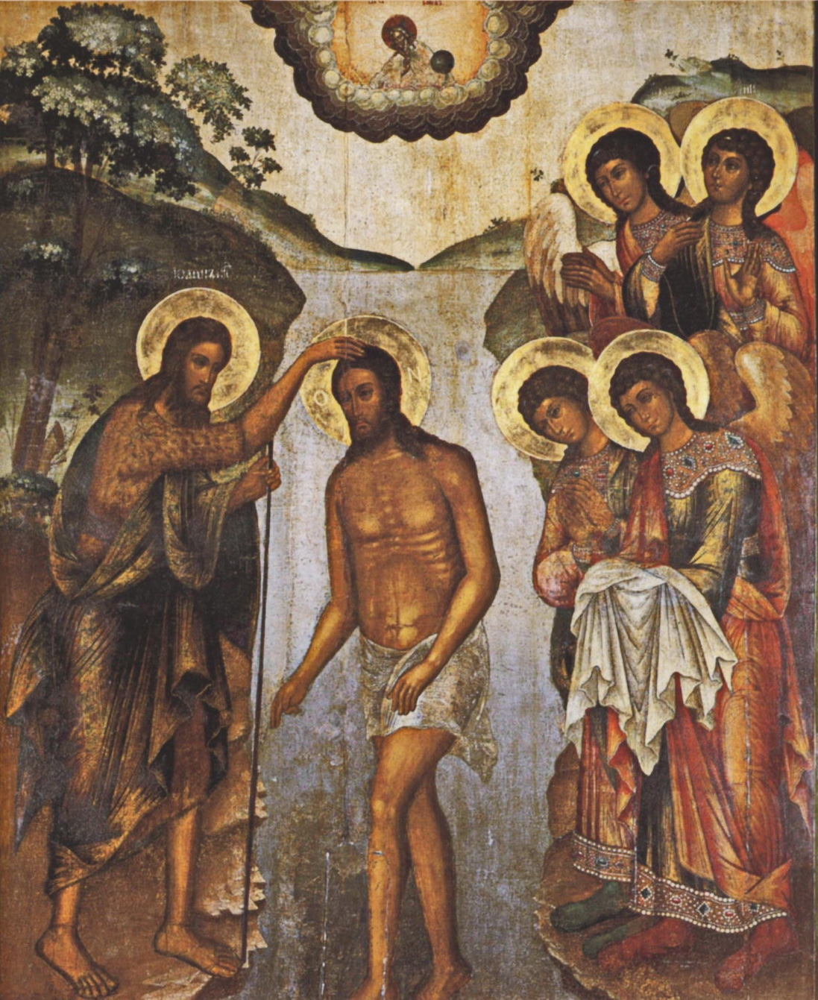
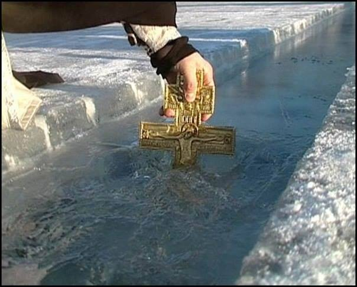

19 01 2014 (1210 дней 3 часа назад)
Святое Богоявление, Крещение Господне

Праздник, установленный в память о Крещении Иисуса Христа в реке Иордан, когда людям впервые были явлены все Три Лица, Три Ипостаси Триединого Бога - Бог Отец, Бог Сын и Бог Святой Дух. Отсюда главное название праздника Крещения - Святое Богоявление.
Когда Иисус принял Крещение, и поднялся из иорданских вод, небеса развезлись и Дух Божий, словно горлица ниспустился на Иисуса, и был голос с небес, вещавший: "Это - Сын Мой возлюбленный, и в Нём - Моё благоволение". Так, исполнилась правда, так было явлено, что Иисус - это Сын Божий. И, одновременно, людям были явно открыты все Три Лица Святой Троицы: Бог Отец гласом с Неба, Бог Сын - Иисус Христос, выходящий из воды, и Бог Дух Святой.
Христос, безгрешный по Своей природе, вступает в воды реки Иордан, в которой люди смывали свои грехи, и этим Он смиренно соединяет Себя с нами, Свою судьбу с судьбой человеческой. Крестясь, Иисус указывает всем нам путь ко спасению и Своим Крещением освящает все водное естество.И хотя вода, как богосозданная и богоблагословенная стихия, играет особую роль в богослужении и Крещенского сочельника, и самого праздника Богоявления, смысл не в ней, а только Таинство Исповеди и Таинство Причащения дают благодать очищения от грехов.
Праздник Крещения Господня — один из самых древних праздников христианской Церкви. Его установление относится еще ко временам апостолов. Древнее название праздника — «Епифания» — явление, или «Теофания» — Богоявление, также его называли «праздник Светов», «Святые Светы» или просто «Светы». Ибо Бог приходит в мир в этот день, чтобы явить миру Свет Неприступный. Все четыре Евангелия свидетельствуют об этом. «И было в те дни, пришел Иисус из Назарета Галилейского и крестился от Иоанна в Иордане. И когда выходил из воды, тотчас увидел Иоанн разверзающиеся небеса и Духа, как голубя, сходящего на Него. И глас был с небес: «Ты Сын Мой возлюбленный, в Котором Мое благоволение» (Мк. 1,9-11). Слово «крещаю», «крещу» в переводе с греческого означает «погружаю в воду». Нельзя понять смысла и важности крещения, не уяснив прежде символического и реального значения воды в Ветхом Завете. Вода — начало жизни. Именно из воды, оплодотворенной животворящим Духом, произойдут все живые существа. Где нет воды — там пустыня. Но вода же может и разрушать, и уничтожать — как водою великого потопа Бог залил грехи и разрушил зло человеческое. В память того, что Спаситель Своим Крещением освятил воду, бывает водосвятие; накануне праздника вода освящается в храмах, в самый же праздник Богоявления — в реках или других местах, где берут воду. Крестным ходом на Иордан называется шествие для освящения природных водоемов. Вода-начало жизни. Крещение Иоанново было символическим и означало, что как тело омывается и очищается водою, так и душа человека, кающегося и уверовавшего в Спасителя, будет очищена от всех грехов Христом. Сам Иоанн восклицал: «Идет за мною Сильнейший меня, у Которого я не достоин, наклонившись, развязать ремень обуви Его; я крестил вас водою, а Он будет крестить вас Духом Святым» (Мк. 1, 7-8). И вот к нему приходит Иисус из Назарета. Иоанн, считая себя недостойным крестить Иисуса, стал удерживать Его, говоря: «Мне надобно креститься от Тебя, и Ты ли приходишь ко мне?». Но Иисус сказал ему в ответ: «Оставь теперь; ибо так надлежит нам исполнить всякую правду» (Мф. 3, 14-15). После Крещения Христа крещение для людей уже не просто символ очищения. Здесь Иисус явил Себя миру как Христос, Сын Божий. «Я видел, я свидетельствую: Он — Избранник Божий», — подтверждает Иоанн Креститель («Мессия» по-еврейски — то же, что по-гречески «Христос», то есть «Помазанник Божий»). Богоявление открыло нам великую Божественную тайну Святой Троицы. Теперь каждый окрещающийся приобщается этой тайне, по словам Христа к Своим ученикам: «Идите, научите все народы, крестя их во имя Отца и Сына и Святого Духа» (Мф. 28, 19).

Никогда воды Крещения не способны были бы очищать грехи человеческие, если бы они не были освящены прикосновением к телу Спасителя. Погрузившись в воду, Спаситель освятил воды, бездны и ключи всех источников.
Святитель Амвросий Медиоланский